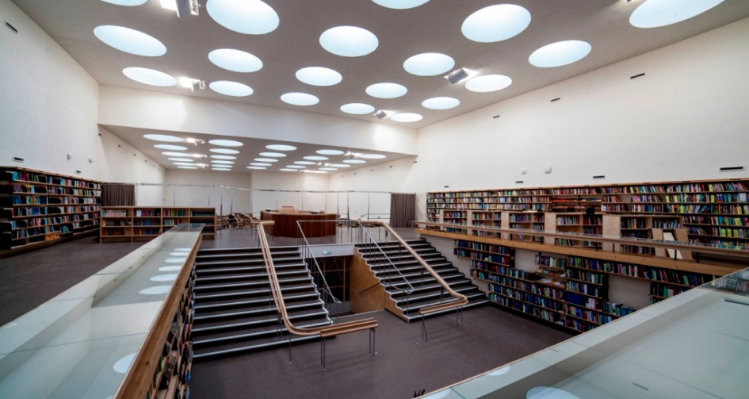

/ Библиотека
О библиотеке
Режим работы
Отдел обслуживания: понедельник - суббота с 11.00 до 19.00
Газетно-журнальный зал: понедельник - суббота с 9.00 до 19.00
Детская библиотека: понедельник - суббота с 11.00 до 18.00
Воскресенье - выходной.
Основная информация
Официальное наименование – Государственное бюджетное учреждение культуры Ростовской области «Ростовская городская библиотека».
Сокращенное наименование – ГБУК РО «РГБ»
Учредитель – Министерство культуры Ростовской области.
Директор библиотеки – Гончарова Виктория Георгиевна.
Библиотека сегодня
Донская государственная публичная библиотека - Центральная библиотека Ростовской области, старейшее книгохранилище Юга России, является крупнейшей среди Центральных библиотек субъектов Российской Федерации.
Библиотека основана 7 января 1886 года. В течение своей истории прошла много трансформаций. В самом начале пути она называлась Ростовской публичной, далее - Ростовская государственная публичная библиотека им. К. Маркса, Северо-Кавказская государственная библиотека им. К. Маркса, Ростовская государственная научная библиотека им. К. Маркса, Ростовская областная научная библиотека им. К. Маркса, с 1992 года - Ростовская городская библиотека.
Сегодня это современный информационный, общественный и культурный центр области, ресурсный центр в системе поддержки муниципальных библиотек и центр непрерывного образования библиотечных специалистов. Донская государственная публичная библиотека – библиотека нового типа:
-
публичная, максимально доступная для любого пользователя;
-
многоязычная, имеющая фонды на всех видах носителей на многих языках;
-
многокультурная, предоставляющая слово разным культурам на равных с другими основаниях;
-
многофункциональная, о твечающая широкому спектру потребностей своих пользователей - от информационных до сервисных и досуговых.
Основная задача библиотеки - расширение доступа к информации и видам предоставляемых услуг. Библиотека занимает ведущее положение в системе библиотечно-информационного обслуживания населения Ростовской области. В библиотеке оборудованы автоматизированные рабочие места для самостоятельной работы пользователей с локальными и сетевыми электронными информационными ресурсами; организован свободный доступ к сети Интернет по технологии wi-fi.